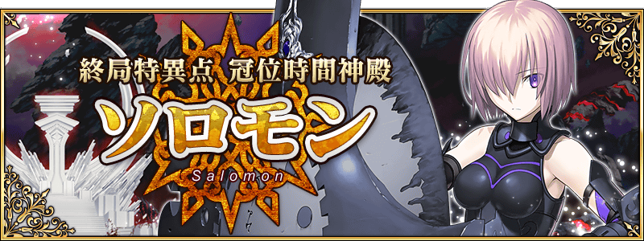
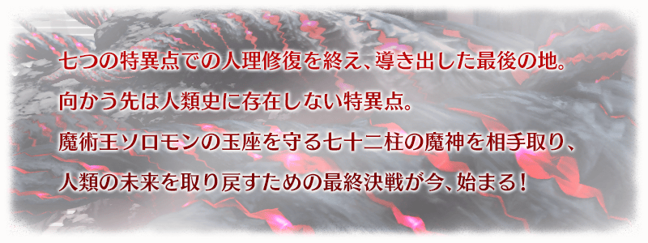
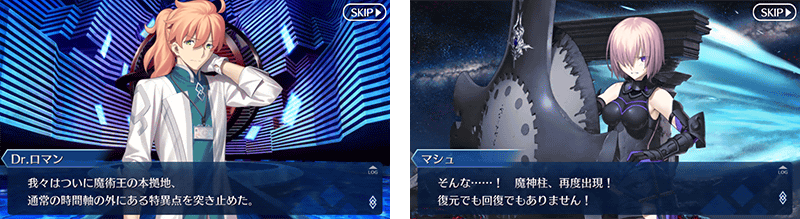
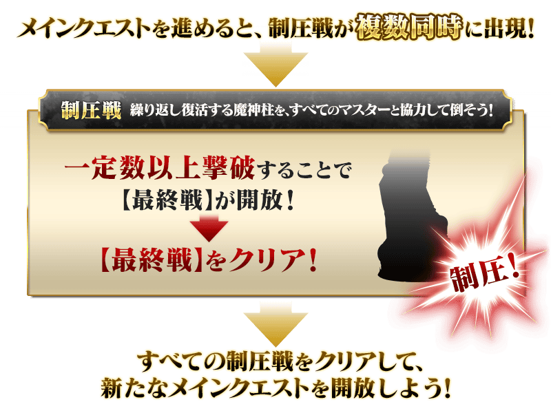
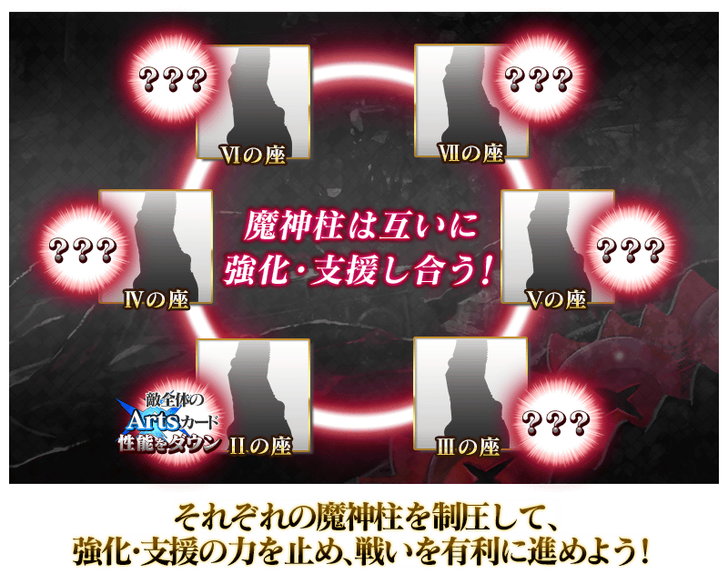
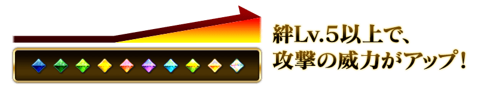
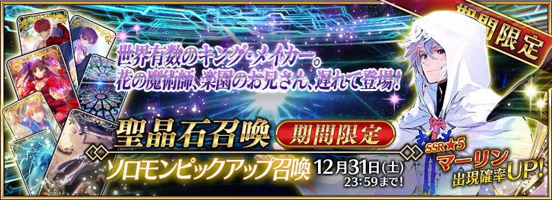
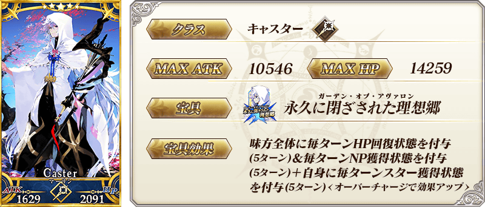
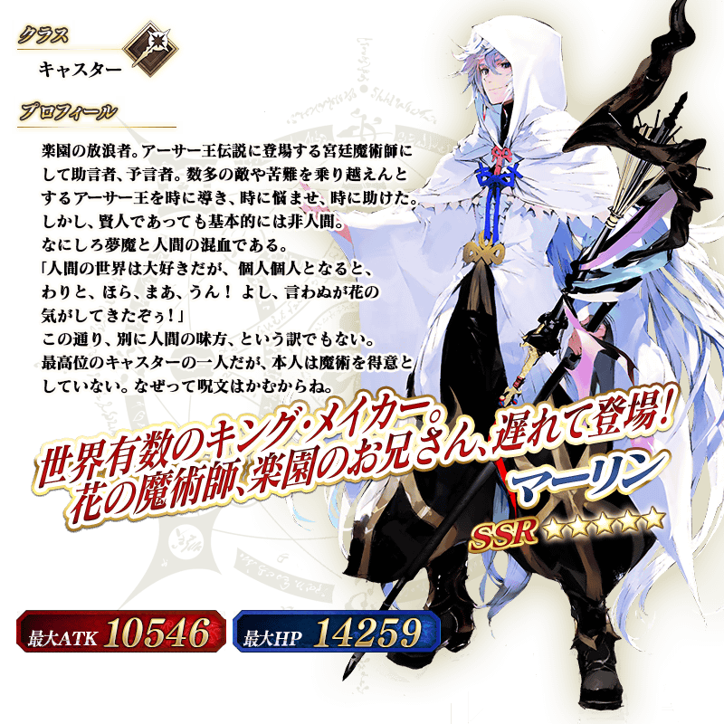

◆公開時間◆
2016年12月22日(四) 18:0019:30～
※12/22(四)修正
◆最終決戰，終於開幕◆
跨越無數困難後在前方等待的，是最後的試練「終局特異點 冠位時間神殿 所羅門」。
將目前為止與Servant們培養出的羈絆化為經驗，展開緊張刺激的戰鬥。
最後決戰，是除此期間無法參加，準備給全部Master合作擊倒敵人的特別關卡「壓制戰」。
◆開放條件◆
通過「第七特異點 絕對魔獸戰線 巴比倫尼亞」後開放。

在「終局特異點 冠位時間神殿 所羅門」，進行主線關卡的話，會發生與魔神柱戰鬥的「壓制戰」。
「壓制戰」是與在地圖各地登場的魔神柱分别作戰。
就算擊倒各地的魔神柱也會不斷復活，但如果與全部Master合作擊倒一定數量就會變成可以壓制。
擊倒魔神柱，阻止人理燒卻吧！

※根據參加時機的不同，會有一般的壓制戰不出現的情況。
就算在該情況也能挑戰「壓制戰【最後戰】」。
另外，不會影響主要關卡的進行和關卡的通過報酬。
※壓制戰沒有回合數的限制。也可以續關。
撤退的情況無法獲得戰利品、Master經驗值、魔術禮服經驗值、絆點數。
在壓制戰戰鬥的魔神柱會各自互相支援其他的魔神柱。
支援的效果相當強力，被壓制的魔神柱會變得無法進行支援。
優先壓制進行棘手支援的魔神柱，控制住支援吧！

在「終局特異點 冠位時間神殿 所羅門」的關卡，Servant的絆等級Lv.5以上的話，會對應等級提升攻擊的威力！

還有，關於絆等級的上升與主線關卡的進行有關連的「瑪琇・基利艾拉特」，同樣賦予攻擊威力提升的效果。

◆「所羅門Pick Up召喚」期間◆
期間：2016年12月22日(四) 18:00～12月31日(六) 22:59
以期間限定舉辦「所羅門Pick Up召喚」！
※未到達終局特異點的狀態也能進行所羅門Pick Up召喚。
在聖晶石召喚初登場的Servant「★5(SSR)梅林」以期間限定登場！
詳情請在聖晶石召喚畫面左下的召喚詳細確認。
※梅林在Pick Up期間結束後，不會追加到故事召喚。
Pick Up期間中，期間限定Servant的出現機率提升！
10次召喚中★4(SR)以上1張確定和★3(R)以上的Servant1位確定！
※★4(SR)以上確定包含Servant和概念禮裝。
※所謂「出現機率UP」意指比同稀有度的Servant出現機率更高的設定。

※與在第七章做為NPC Servant登場時，一部份寶具效果相異。
